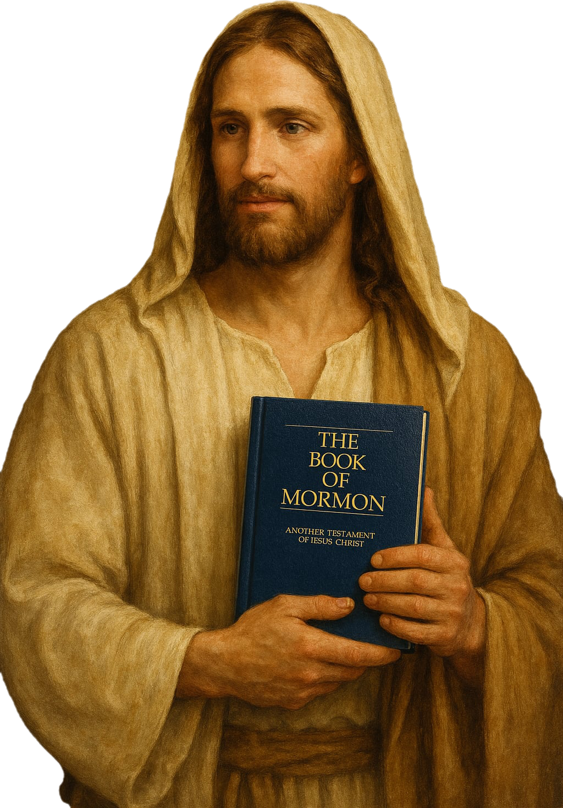

About Read It BoM

Hi! I'm Swenson, and I run the Read It BoM social media account. My goal with Read It BoM is to encourage people to actually read The Book of Mormon, aswell as promote faith in the Restored Gospel of Jesus Christ.
My content can varies from musings on the Book of Mormon, to apologectic response to anti-mormon critics of the church, to interviewing renoun philosophers on deep theological topics. My content always supports my goal of promoting faith in the Restored Gospel and getting people to read the Book of Mormon for themselves. I believe the power of the Book of Mormon, which is literally just the power of the Spirit of God working to convince people of the truthfullness of Jesus Christ's atonement, can change any and everyone's life.
If you have been wanting to learn more about the Restored Gospel, especially if want to hear defenses for the Restored Gospel, follow me on different social media platforms: YouTube, TikTok, and X (Twitter).
"Read It! The Book of Mormon: Another Testament of Jesus Christ can and will change your life." Get a free copy of the Book of Mormon & Talk to missionaries online: Here.